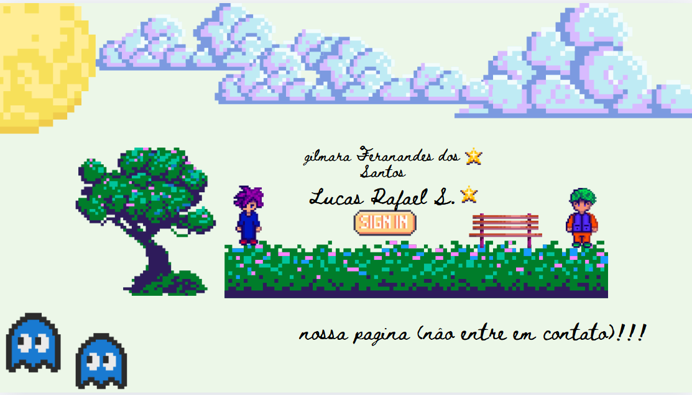

Aviso:
Seu navegador está com o JavaScript desativado. Por favor, ative-o para uma melhor experiência neste site.
MINHA PÁGINA
Currículo Lucas
Craftings básicos do minecraft
Currículo Mary
Tema da Mary
Contato
